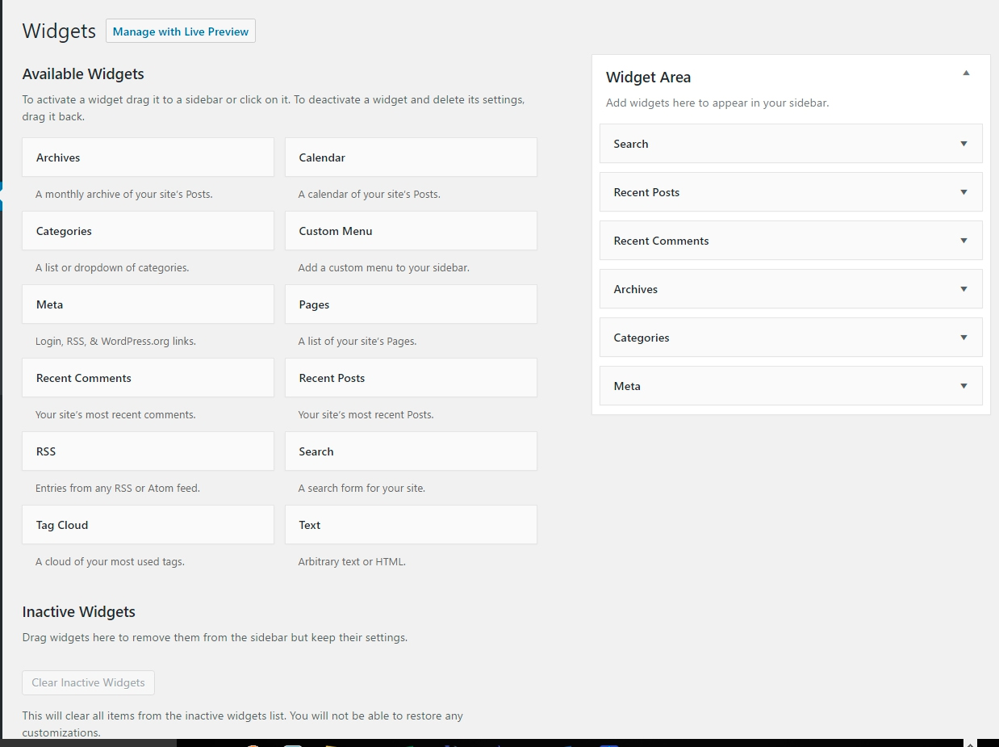
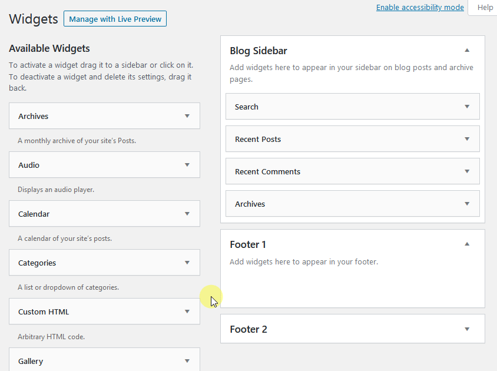

WIDGETS TAB
DASHBOARD >> APPEARANCE >> WIDGETS
Widgets
Widgets are pieces of code that can be inserted into Widget Areas. Various items such as post calendars, categories, and recent comments can be placed into certain predefined areas on your website.
When WordPress is installed, it has a pre-installed theme which is very simple and unattractive. But no one wants a website to be that much simple. To make it more attractive one can install and apply different themes from WordPress.
Some specific features of a widget are
- They help you add content and features.
- They can be easily dragged and dropped in widget area.
- They vary from theme to theme.
On Clicking Widgets option, Your WordPress Widgets dashboard screen will look something like this:
Some specific features of a widget are
- They help you add content and features.
- They can be easily dragged and dropped in widget area.
- They vary from theme to theme.
Widget Area
Widget areas, (formerly known as sidebars), are pre-defined areas on your website that you can drop in widgets. Based on the theme you use, you can have multiple widget areas that can be in the header, sidebars, content areas, and even footers of your website. Widget areas are quick ways to add content to your website in certain areas without having to code,( or hire a coder).
Drag widgets from the left-hand side and drop them into any widget area on the right-hand side to show the widget in that specific widget area on your website.
When you’re done with any changes, don’t forget to click on the “Save” button at the bottom of the widget’s options panel. WordPress provides some standard WordPress widgets such as Archives, Calendar, Categories, Custom Menu, Recent Comments, and Recent Posts. More widgets can also be added by installing new WordPress plugins.
Detail
- Available Widgets − You can use these to add into your sidebar main.
- Inactive Sidebar (not used) − These are not used and can be removed permanently from the widget list.
- Inactive Widgets − Removes the widgets from sidebar but keep it in the settings.
- Sidebar Main − Any widget you add here will appear on your site.
- Manage in Customizer − Takes you back to customization page.